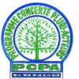
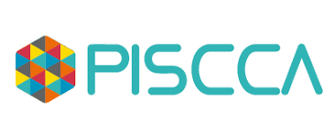

PISCCA 2022 : Les lauréats désormais connus
 par pcpacongo - 5 septembre 2022 Laisser un commentaire

Au terme de son appel à projets pour le Programme d’Appui à l’amélioration durable des conditions et du cadre de vie des populations au Congo (PISCCA) 2022, l’Ambassade de France a reçu 143 propositions de projets de développement. Plus de 80% d’entre eux visaient l’amélioration des conditions de vie des populations vulnérables.
A l’issue du comité de sélection qui s’est réuni le 22 avril 2022, 14 projets ont été retenus, dont 4 portés par des associations et ou dynamique collective membres du PCPA Congo
- Association Scouts et Guides (ASGC) – « Création et aménagement du jardin botanique de la Djoumouna pour la conservation et la protection de la biodiversité par une gestion participative des communautés locales » (Pool)
- Centre d’Initiative et d’Action pour le Développement (CIAD) – « Campagne de sensibilisation pour l’utilisation des biopesticides et biofertilisants à la ceinture maraîchère de la rive droite » (Brazzaville)
- Observatoire congolais des Droits des Consommateurs (O2CD) – « Renforcement de la structuration du réseau des associations des consommateurs pour améliorer la mobilisation et la protection des consommateurs » (national)
- Réseau des Acteurs du Volontariat et de la Solidarité Internationale (RAVSI) – « Renforcement des capacités des organisations de la société civile dans la gouvernance associative et la coopération internationale » (Pointe-Noire, Dolisie, Brazzaville)
Point de rappel
En encourageant et favorisant la structuration de la société civile congolaise, le PISCCA 2022 vise une amélioration durable des conditions de vie des populations vulnérables au Congo, tout en préservant l’environnement dans lequel elles vivent.
Les 3 thématiques concernées par cette édition 2022 sont :
- Amélioration durable des conditions de vie des populations vulnérables et / ou marginalisées, en particulier les femmes et les enfants ;
- Préservation de la biodiversité et de l’environnement ;
- Structuration et renforcement des capacités de la société civile.
La liste des 14 projets retenus est disponible sur le site web de l’Ambassade de France au Congo.
Partager :
soyez le premier à aimer cet article.